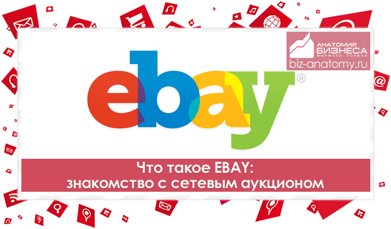

Обзор аукциона eBay. Основные понятия.

Аукцион eBay - сегодня по прежнему игрок номер 1 на рынке заработка. В американской части Интернета, в конференциях - это самая обсуждаемая тема... Приводятся данные о заработках наиболее удачливых пользователей: 30 тыс. - 80 тыс. долларов в месяц! Причем речь идет об обычных одиночных пользователях... У нас в Рунете аналогичные цифры конечно скромнее... Однако нам лично известен человек, который например в июле 2002 года поимел с аукциона 12 тыс. долларов. Сейчас он аукционом занимается гораздо меньше, но тем не менее свои 5-6 тыс. долларов в месяц с этого дела имеет.
В последнее время популярность аукциона eBay достигла невиданных масштабов. Можно даже говорить о буме, причем именно о буме у нас (так как у них аукцион давно известен). Экспансия русских покупателей и продавцов на этот аукцион достигла невиданных масштабов - можно даже говорить о "русской" интервенции или нашествии. Даже те, для кого слово аукцион eBay ассоциируется с полным бредом или с познаниями на уровне квантовой механики - сейчас думают иначе.
Во-первых: изучить что и как - это сейчас доступно любому, даже самому малограмотному пользователю. Если нужно, то есть и помощь по-русски в этом вопросе... Ну, а то что получается на выходе всего этого (в финансовом плане) - заставляет даже самых отъявленных скептиков пересмотреть свои взгляды и как минимум хотя бы ознакомиться поближе с этим аукционом.
Сейчас с аукционом eBay работают не только частные лица, но и фирмы стали подключаться к этому делу. Судите сами, что если бы там было "неинтересно", то никто бы из фирм (юрлиц) даже пальцем не шевельнул бы... В Интернете уже проскальзывали в конференциях сообщения некоторых пользователей, которые запросто, без особых усилий "подымают" на аукционе $200-$300 в неделю. И как они говорят - это только начало. Совсем неплохо для начала...
Итак в двух словах: что же такое eBay? Огромная барахолка-базар или торговая точка (если кому-то так больше нравится). Посещаемость этой "торговой точки" составляет несколько миллионов!!! человек в день. Посетители со всего мира и все с деньгами. Очень много американцев... Ну а дальше все просто: купить там можно все что угодно и самое главное значительно дешевле, чем в вашем городе стоит аналогичный товар. Примеры цен: ноутбук (хороший!) можно приобрести за $100, сканер за $10, телефон за $5. Полно всякой периферии, компьютерной мелочи, да хоть целый компьютер! Понятное дело, что есть там все: фототехника, видеокамеры, бытовая электроника и т.д. Зайдите сами да посмотрите: наименований товара - там десятки тысяч! Нужна магнитола или музыкальный центр? А может быть сковородка Tefal? Нет проблем - здесь вы можете купить все это по дешевке.
Если вы смотрите шире в этом вопросе, то вы можете сами стать продавцом на этом аукционе. Несколько миллионов посетителей в день - неплохо, да? Продается на eBay все: и реальные товары и мифические (например один студент душу продавал). Отлично идет всякая старина, экзотика и т.д. Да хоть вязаные шерстяные носки! Один предприимчивый товарищ продает например, красноармейские буденовки со звездами. Неплохо идут... Сначала сам шил на дому эти буденовки. Сейчас у него уже целая бригада женщин-надомниц, которые занимаются пошивом буденовок. Все зависит от вашей фантазии. Арендовать помещение вам не нужно, офис держать не нужно, свои продавцы вам тоже не нужны - так что начать просто... С доставкой и пересылкой туда товара - либо самому заниматься этим, либо с помощью посредников, например Pregrad.Net. Собственно вещь или товар вам нужно высылать только после того как вам за него заплатили (т.е. купили). Интернет предоставляет вам отличную возможность начать свой бизнес...
Допустим вы поняли, что на этом аукционе можно зарабатывать хорошие деньги... Также вам понятно, что другие уже делают это... И вот теперь вы сидите перед экраном своего монитора и очевидно гадаете: с какого боку ко всему этому подходить?
Давайте разложим этот момент (трудный для всех новичков) на более простые составляющие или даже опишем весь процесс по шагам...
Шаг 1. Зарегистрироваться на аукционе (как покупатель - этого достаточно для начала), используя инструкцию.
Шаг 2. Нужно провести разведку боем :) Понять, что же такое есть этот аукцион... Посмотреть, разобраться хотя бы в общем, т.е. приступаем к практике... Другими словами - вы уже зарегистрированы как покупатель на аукционе. Данный статус не требует от вас ни сведений о кредитной карте, ни вообще каких-либо финансовых вложений или денежных операций... Итак начнем:
Просто пощелкайте по страницам, зайдите в ваш аккаунт - почитайте. Ознакомьтесь с возможностями аукциона. Пощелкайте мышью по страницам... Посмотрите, что и как работает... Просто привыкнете к нему... Теперь это будет местом, где вы будете зарабатывать деньги... Первый раз сталкиваетесь вообще с аукционом? Ничего страшного: всегда в жизни что-то бывает в первый раз... Слабо дружите с английским языком? Поставьте себе компьютерную программу-переводчик (поищите в софт-архивах в Интернете). Установите такую программу у себя и проблемы с английским для вас будут решены... Кроме того, если что-то непонятно, то на аукционе есть хороший Help. Читайте :)
Понятно, что для многих этот этап будет нелегким, но... его надо пройти, если... вам конечно нравятся зеленые банкноты с портретами американских президентов. Скорее всего вам нужны такие банкноты, так что господа - немного надо поучиться..., тем более что окупится все это сторицей...
Шаг 3. Переходим к более решительным действиям - участвуем в торгах! Т.е. выбираете какой-нибудь интересный лот (компьютер, монитор, какая-нибудь железяка или любое другое, что вам понравилось) и делайте ставки - участвуйте в торгах! Пока не нужно ставить себе цель что-то выиграть, тут важно другое - понять принцип... Сам факт совершения ставок - ни к чему вас не обязывает и никто с вас ничего не спросит... Если нужно вам, то можете поучаствовать в нескольких торгах... Тут главное - набить руку...
Шаг 4. У некоторых на этом шаге уже получается определиться с главным: для чего вы подходите и каким способом делать деньги?
Вариантов здесь много:
а) покупать там по дешевке для себя
б) покупать там для перепродажи здесь
в) покупать там через Интернет и там же продавать
г) продавать там товар отсюда
Возможны еще какие-то варианты... Посмотрите, что другие продают... Что продают наши... С продажей кстати могут быть и такие варианты: ваш товар реальный, физический и его нужно доставлять туда (все эти проблемы конечно же решаются). Но также ваш товар может быть и виртуальным - тогда вы сами можете посылать его через Интернет... Другими словами - нужно немного "покрутиться" на аукционе и тогда к вам придет понимание того, что для вас ближе: покупать или продавать?
Так что выгоднее: продавать или покупать?Да, это интересный вопрос... Тут все зависит от вас... Выгоду можно получать как от покупок на аукционе (для себя или последующей перепродажи здесь), так и от продажи чего-либо там... Многое нужное для вас, можно приобрести по смешным ценам, например ноутбуки выставляются на аукцион со стартовой ценой в $1. Приобретать можно, как для себя лично, так и для перепродажи здесь. Но если вы хотите заняться бизнесом или существенно поправить ваш семейный бюджет или даже просто хотите заработать серьезных денег, то ваш путь - это продажи...
Вам не нужен ни офис, ни склад, ни магазин... Все что вам нужно - это аукцион eBay. Грубо говоря - это самый большой в мире базар с огромнейшей платежеспособной аудиторией со всего мира, в котором вы можете выставить на продажу свой товар. Причем вы можете делать это, не выходя из своего дома (а все так и делают...). Ваш товар тоже может спокойно лежать у вас дома. Как только на аукционе у вас его купят (а вы может продавать сколько угодно экземпляров товара), то вам останется только разослать его вашим покупателям. Причем все расходы по доставке - за их счет.
Итак мы определились, что существуют два варианта использования аукциона: продавать и покупать. Регистрация в обоих случаях совершенно бесплатна.
Если вы хотите быть покупателем
Очень многое можно приобрести по смешным ценам... Вам нужно сделать для этого всего один шаг - зарегистрироваться. После прохождения регистрации, вы получите статус Покупателя, т.е. сможете покупать все, что хотите.
Если вы хотите быть продавцом
Для начала посмотрите чем торгуют другие. Также вам придется проделать несколько шагов:
Зарегистрироваться. Кстати, это обычная стандартная процедура регистрации, после которой вы получаете статус Покупателя, т.е. сможете покупать.
Вам необходимо на специальной странице ввести информацию о вашей кредитной карте, лучше Visa (если у вас ее нет, то карту без проблем за небольшую сумму можно открыть в любом банке). После ввода информации о карте вы получаете еще один статус - Продавца, т.е. теперь сможете также продавать свои товары.
Теперь можно начинать пробовать торговать.
Выбор товара для торговли - это один из главных этапов подготовки к продажам. На этой странице мы поможем Вам определить некоторые критерии отбора товаров, а также покажем, как определить спрос на тот или иной товар.
Первое, что необходимо сделать - это уточнить Вашу возможность пересылки товаров за рубеж, а также стоимость отправки и ограничения по весу, размеру, количеству и т.д. Обычно стоимость пересылки из России и Украины колеблется в районе $6.00-$10.00 за два килограмма.
Теперь давайте проведем небольшой анализ рынка. Для того, чтобы Ваш товар пользовался спросом, он должен быть либо новинкой ширпотреба, либо уникальным, редким или коллекционным изделием. К новинкам относятся последние модели бытовой техники и электроники (например, игровые приставки Sony Playstation-2), а также новые разработки в области одежды, обуви и парфюмерии. Однако ввиду многих причин (к примеру, напряжение ~110V в США) этот раздел по большей части недоступен продавцам из бывшего СССР. Конечно, есть и исключения: успехом пользуются наручные часы с "дутым" алюминиевым дизайном или типа "хронометр", а также модная дамская обувь. Покупают также PAL/SECAM/NTSC видеомагнитофоны с конвертацией сигнала.
Что же касается редких или коллекционных вещей - то тут у Вас конкуренции намного меньше. Девяносто процентов продавцов из стран бывшего Союза торгуют именно в этой области. Вот лишь некоторые наименования товаров, пользующихся большим спросом: фотоаппараты и кинокамеры СССР (а также объективы к ним), изделия с олимпийской или космической символикой, оловянные солдатики (старые и новые), нацистская военная атрибутика, фарфор, изделия из янтаря, бутылки из цветного стекла, иконы, альбомы по искусству, каталоги оружия, амуниции, видов вооружения и т.п., модели армейских машин, судов и самолетов, изделия антиквариата и т.д. Все это может принести Вам прибыль. Вы также можете продавать то, что сделаете своими руками или наладить небольшое производство того или иного товара. Все в Ваших руках.
Уместно упомянуть о некоторых предметах коллекционирования, которые не пользуются спросом, а именно: марки, значки, монеты и "народные промыслы" типа матрешек или изделий из бересты. Это не значит, что торговать такими изделиями не следует, однако наш опыт показывает - рассчитывать на серьезную прибыль в этом случае не стоит.
Мы ни в коем случае не ограничиваем Вас в выборе товара - все наши суждения призваны дать Вам как можно больше информации для успешного бизнеса. Все вышеизложенное призвано создать у Вас примерное представление о том, что же пользуется успехом за аукционе. Теперь давайте перейдем к непосредственному исследованию спроса на конкретную вещь. Аукцион обладает мощной поисковой машиной, позволяющей отследить предметы, проданные в течении последних 30 дней. В качестве примера возьмем советский фотоаппарат (russian camera). Следуя ссылке введите "russian camera" в окно поиска, и Вы увидите количество проданных фотоаппаратов и их продажные цены. Вы можете сузить поиск, введя марку фотоаппарата (например: Zorki или LOMO). Такая система поиска универсальна для всех видов товаров.
Например, в поисковую машину можно просто ввести слово russian. Можно получить общее представление... Чего только не продают наши соотечественники! Например, буденовка с красной звездой "уходит" за $20 за штуку (интересно, сколько будет стоить пошив буденовок в ателье?), а наши флаги в среднем уходят за $8-10 за штуку. Много продается наших бывших советских фотоаппаратов ($40-50 за штуку и выше - все зависит от конкретной модели). Часто попадается различная дребедень, за которую у нас и рубля не дадут, а там глядишь за это отваливают $120-150... Другими словами, вокруг нас много товара, за который там готовы платить деньги. Нужно только оглядеться вокруг и хорошо подумать...
Аукцион eBay - как и чем платить... Webmoney
Да-да... все верно: через русскую платежную систему WebMoney Transfer. Однако напрямую аукцион не работает с этой системой, поэтому нужно воспользоваться услугами какой-либо фирмы-посредника. Схема такая: посредник заплатит за вас деньги продавцу. Как продавцу нужно будет - тем способом ему и оплатят. А вы рассчитаетесь с фирмой-посредником, через нашу систему WebMoney (кто не знает - WebMoney Transfer. - это русская система, открыть там счет и разобраться как оно все работает - не сложнее, чем освоить инструкцию к телевизору).
Western Union
Один из простых и быстрых методов оплаты - это оплата по системе Western Union. Ее принимают почти все продавцы, хоть об этом и не пишут. Но этот способ довольно дорогой (денежный перевод пройдет за 2-3 часа, расценки на переводы можете узнать в ближайшем отделении Western Union - обычно банки этим занимаются).
Кредитные карты
Как я говорил, если у вас есть кредитная карта, то у вас нет с этим проблем. Хотя, так как у вас карта выдана не в одной из высокоразвитых стран, то вы не можете использовать для оплаты ту систему, которую рекомендует сам eBay. Там принимают только карты из ограниченного списка стран. Но вы можете платить через сайт BidPay. Там принимают все карты. Как только вы оплатите - продавцу пошлется денежный чек. И он вышлет товар. Если у вас нет карты, то рекомендую получить ее в вашем ближайшем банке.
Можно добавить, что наиболее лучшим выходом очевидно будет - это иметь собственную полноценную карту, например Visa. И не какую-нибудь там Visa Electron, а самую полноценную Visa Classic. Причем дешевле всего купить виртуальный вариант этой карты. Т.е. вам банк открывает полноценную Visa Classic, но пластик не изготавливается и на руки вам не выдается такая карта. Использовать ее можно только в Интернет. За счет этого получается все в итоге дешево и сердито: жителям Украины открытие карты Visa Internet сроком на 1 год обойдется в $5 (Приватбанк); России - в $10 Москомприватбанк, можно открыть карту через Интернет, и не только россиянам) и т.д. "VISA-INTERNET - это "виртуальная" карта, имеющая все атрибуты обычной карты VISA: номер, срок действия, данные пользователя, за исключением самого пластика и ПИН-кода. Для интернета не нужен пластик и ПИН-код, нужны лишь данные Вашей карты и Ваше желание ей расплатиться за предлагаемый товар или услугу.
Зачем нужны такие эмуляторы полноценных карт? А затем, например, что более дешевая Visa Electron (по сравнению со стандартной Visa Classic) - в Интернете практически нигде не принимается к оплате. Более того, сама корпорация Visa запретила карты Electron использовать в Интернете (видимо, чтоб не создавать конкуренции своим основным более дорогим картам...). Справедливости ради надо отметить, что в некоторых магазинах платежи по Visa Electron проходят, но это скорее исключение из правил...
Аукцион eBay и таможняВопросы с таможней у вас могут возникнуть, если вы что-то покупаете там и затем ваша покупка идет по почте сюда... Вопрос о таможне - это один из вопросов, часто задаваемых по аукциону eBay. Действительно, на eBay очень многое можно купить буквально за копейки. Например, ноутбуки выставляются на продажу от $1 и в итоге продаются в диапазоне цен от $50 до $250 (все зависит от технических характеристик ноутбука). В любом случае - это смешные цены. У нас здесь вы за такие деньги ничего подобного не купите. Та же самая ситуация и по многим другим продаваемым вещам... Так вот о таможне: в таможенных правилах нет ничего страшного. Все вопросы решаются... Аукцион торгует со всем миром и таможня есть не только у нас, но и в других странах... И как-то ведь люди решают эти проблемы...
Усилиями и компетентностью некоторых наших читателей мы сегодня имеем определенную информацию о таможне (кстати, спасибо большое всем приславшим информацию по этому вопросу). Итак, вот отрывки из писем наших читателей:
1. Валерий Дедков:
" Если идет обычная пересылка, то груз попадает в другую категорию, которая называется "cargo". Далее идет различная классификация по отгрузке типа board-board или board-car или board-customs. Вообще классификаций существует множество и в зависимости от того, по какой классификации пересылается груз и оплачивается пошлина. Дело в том, что в собственность груза Вы вступаете только после оплаты пошлины, а пока Вы ее не оплатили, груз принадлежит отправителю и может быть ему возвращен. А в случае отказа принять возврат, груз переходит в собственность государства, на территории которой он находится. Что касается чека, подтверждающего стоимость приобретенного на аукционе компьютера, то при пересылке продавец должен указать цену груза и еще лучше застраховать пересылку. И эта категория называется, кажется, post-post.".
2. Виталий:
"Если Вы получаете товары, пересылаемые в международных почтовых отправлениях, общая стоимость которых в эквивалентном выражении не превышает 100 долларов США включительно, то они оформляются без уплаты таможенных пошлин и налогов. В случае получения физическим лицом товаров, пересылаемых в международных почтовых отправлениях, общая стоимость которых в эквивалентном выражении превышает 100 долларов США, в части такого превышения применяется единая ставка таможенных пошлин и налогов в размере 30 процентов таможенной стоимости указанных товаров.
В ответе использовано постановление Правительства от 10 июля 1999 года N 783 "О перемещении товаров физическими лицами через таможенную границу Российской Федерации"."
Также немного позднее к этому документу вышли правила-дополнения, а именно приказ Таможеного комитета N 815 от 24 ноября 1999 г. "Об утверждении Правил перемещения в упрощенном, льготном порядке товаров физическими лицами через таможенную границу Российской Федерации". Правда действие этих правил не распространяются на почтовые посылки, но тем не менее... - может пригодиться...
Одним из ключевых моментов является определение стоимости вашего товара - отсюда становится ясно: нужно вам платить пошлину или нет? И если платить, то сколько?
Мой совет:
"Возьмем конкретный пример с ноутбуком. Чтобы без проблем провезти его (чтоб у вас не "оценили" его на таможне в $2000) - очевидно нужно иметь справку-квитанцию или товарный чек, либо иной подтверждающий документ, где бы указывалась цена, за которую вы его купили. В данном случае - этот вопрос легко можно решить с продавцом, пусть он вам сделает такую справку-чек и заверит ее какой-нибудь печатью (через нотариуса либо еще как-то). Возможно, подойдет справка о продаже вам товара с паспортными данными или адресом продавца, заверенная нотариусом (со стороны продавца конечно, нотариус в данном случае подтверждает реальность существования продавца). Главное, чтоб эта справка солидно выглядела и была убедительной для таможни. Вопрос этот решаем, конечно... Если хорошо подумать, то ничего сложного тут нет. Кроме того, сохраните конечно письмо от продавца, в котором он будет поздравлять вас с покупкой и ссылка на соответствующие страницы на самом аукционе eBay. Возможно все это пригодится в случае возникновения спорной ситуации на таможне."
Валерий Дедков:
"Что касается чека, подтверждающего стоимость приобретенного на аукционе компьютера, то при пересылке продавец должен указать цену груза и еще лучше застраховать пересылку. И эта категория называется, кажется, post-post."
А вот еще дополнение по таможне - прислал его Сошкин Сергей Юрьевич (спасибо!). Суть проста: когда вы здесь делаете оплату продавцу туда за купленный по дешевке товар, то здесь обязательно остаются "следы" оплаты. Например, справка из банка (если оплата шла через банк с вашего карточного либо другого счета) и т.д. В любом случае - платите ли вы через через пластиковую карточку, Western Union либо как-то еще - вы можете здесь запастись документом или справкой на русском языке (любая организация проводящая платеж обязана вам выдать такую справку - требуйте!) о факте и цели вашего платежа. Такая русскоязычная справка плюс усиленная какими-либо справками или чеками со стороны продавца должна решить все возможные вопросы на таможне по поводу цены товара. Таким образом, ноутбук приобретенный вами за $100 - именно во столько и будет оценен на таможне и обойдется вам без дополнительных пошлин.
Итоги: покупать на аукционе eBay можно и нужно. Единственное, что нужно брать в расчет таможню. Ну а если вы продаете что-то на eBay, то тут все намного проще. Вывозить безпошлинно товаров можно на гораздо большие суммы!!!. Читайте подробнее документы, ссылки на которые приведены на этой странице. Ну и сами ищите и смотрите в Интернете аналогичную информацию.
Так что, господа, обратите самое пристальное внимание на сей аукцион.
По материалам сайта : http://www.majesty.ru/